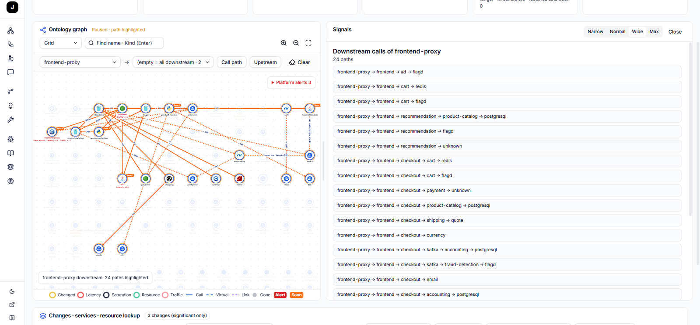
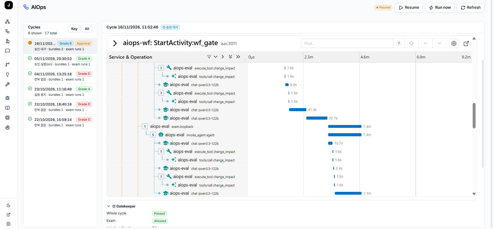

1. 세 가지를 함께 관리한다
운영은 결국 세 가지를 놓치지 않는 일이다. 지금 무슨 맥락인지(문맥), 무엇이 달라졌는지(변경), 지금 어떤 상태인지(상태). JuneAI는 이 셋을 따로 재지 않고 하나로 묶어 항상 추적한다.
문맥
객체와 객체가 어떤 맥락으로 이어지는지 유지한다.
변경
무엇이, 언제, 어떻게 달라졌는지 기록한다.
상태
지금 각 객체가 어떤 상태인지 관리한다.
그 위에서 다양한 객체 간의 이벤트와 관계를 모니터링하고, 손대기 전에 영향과 변경을 시뮬레이션한다.
2. 스팬과 워크플로우로 관리한다
데이터는 흘려보내지 않고 남긴다. 스팬 속성에 중요 데이터를 별도로 관리하고, 예상치 못한 변경과 상태의 변경을 항상 모니터링한다.
- 스팬 속성 — 중요한 값을 스팬에 붙여, 나중에 되짚을 근거로 남긴다.
- 상시 모니터링 — 예상치 못한 변경과 상태 변화를 놓치지 않는다.
- 워크플로우 — 상태 관리는 워크플로우가 더 유용하며, 워크플로우는 이벤트 드리븐에 더 적합하다.
3. 레거시를 변경없이 더한다
레거시는 위의 기능을 제공하지 않는다. 하지만 JuneAI를 쓰면, 레거시를 변경없이 위의 기능을 추가한다.
- 기존 레거시를 변경없이 개선하면서 사용자 경험을 향상시킨다.
- 최신 기술인 AI 에이전트와 온톨로지를 레거시 기반으로 구성한다.
- 시스템의 안정성을 높이고, 기존 핵심 자산을 안정적으로 보완한다.
레거시를 건드리지 않고도 문맥·변경·상태 관리를 더한다. 핵심 자산은 그대로 두고, 그 위를 보강하는 방식이라 안전하다.
4. 팔란티어보다 정교하고 정확하다
팔란티어 온톨로지는 문맥이 자주 끊기고, 변경을 놓치는 경우가 발생한다. 프로세스와 서비스 경계에서 전파가 중단되고 문맥이 끊기는 경우가 빈번한데, 팔란티어만으로는 해결이 어렵다. 특히 레거시가 많은 환경에서 팔란티어의 약점이 드러나고, 상태가 일치하지 않는 정합성 문제가 발생한다.
| 구분 | 팔란티어 온톨로지 | JuneAI |
|---|---|---|
| 문맥 | 경계에서 전파가 끊겨 자주 단절 | 프로세스·서비스 경계를 넘어 유지 |
| 변경 | 놓치는 경우 발생 | 항상 기록하고 모니터링 |
| 상태 | 불일치로 정합성 문제 | 일관되게 관리하고 추적 |
| 레거시 | 많을수록 약점이 커짐 | 변경없이 그 위를 보강 |
JuneAI는 팔란티어보다 훨씬 정교하고 정확하게 문맥, 변경, 상태를 관리하고 추적한다. 이벤트와 관계를 정확하게 모니터링하고, 영향 범위와 변경 정도를 정확하게 시뮬레이션한다.
요청 아이디 별로 처리 흐름과 호출의 문맥, 변경, 상태를 관리한다.






JuneAI는 문맥, 변경, 상태를 항상 관리하고 전파한다. 중간에 끊어지거나 유실되지 않는다. 이를 통해 더 정확한 원인 분석과 조치가 가능하고, 사용자는 최적의 의사결정을 한다.